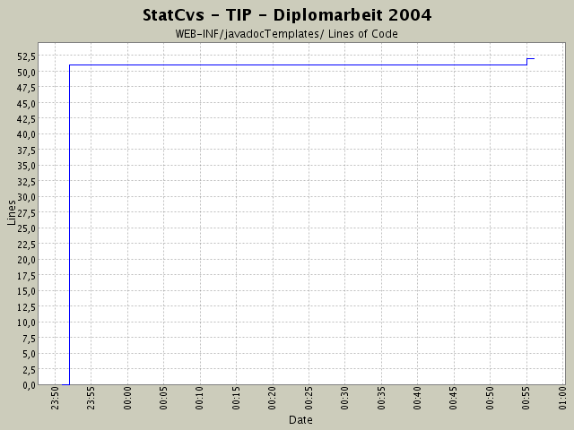

Summary Period: 2004-04-13 to 2004-04-14
[root]/WEB-INF/javadocTemplates

Total Lines Of Code:
52 (2004-06-13 13:05)
| Author | Changes | Lines of Code | Lines per Change |
|---|---|---|---|
| hirsch | 5 (100.0%) | 52 (100.0%) | 10.4 |
Einfügen von CSS-Angaben als BUILD-Variable
in das ANT-Skript.
1 lines of code changed in:
JavaDOC-Template hinzugefügt, damit ich endlich den
ANT-Task entsprechend anpassen kann und für
zukünftige Projekte das JAVADOC-Stylesheet anpassen kann.
51 lines of code changed in:
Generated by StatCvs v0.2-dev